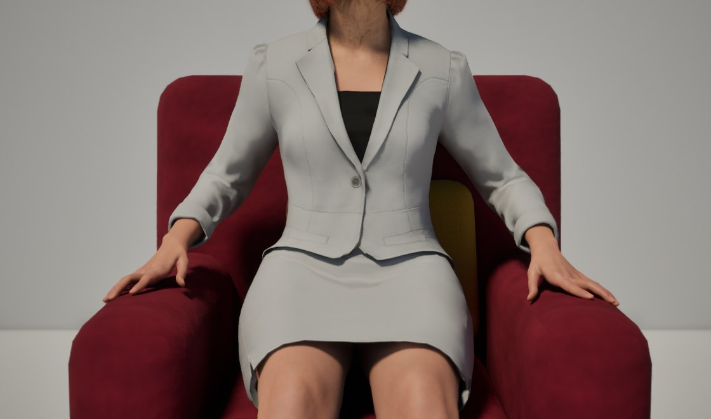

Mocapen vet inget om fåtöljen. Kontaktmotorn rättar varje bildruta så att rumpan vilar på sitsen, händerna ligger på armstöden, fingrarna följer kanten och fötterna står på golvet. Den gör det av sig själv, utan handarbete.

Unreal visar hur Lisa ser ut och var fåtöljen står. Blender räknar ut kontakten. Sedan går svaret tillbaka till Unreal som en ny animation. Färgen visar var varje steg körs.
AS_Body_<klipp>.pod_place).pod_kontakt_export).pod_truth).bygg_scen).UE_sanning).till_ue).AS_Body_<klipp>_kontaktN (pod_kontakt_bake).Vi provade tre vägar den 3 oktober.
Med löst inställda leder föll armarna ner på låren. Med styva leder svävade händerna cirka 2,5 cm, handlederna slets upp och fingrarna saknade fysikkroppar.
FörkastadFysiken räknar bara golvet som stöd, inte fåtöljen. När händerna låstes sjönk kroppen 20–30 cm ner i fåtöljen. Kontakt med omgivningen kräver Pro.
Bara för finputsMäter mot riktiga vertexar, både hud och kläder, och fåtöljens exakta geometri. Varje rättning är mätbar och kan köras om på nytt klipp.
ValdUnreal spelar animationen med Lisas egna benlängder och lägger höften 7,06 cm högre än i mocapen. Vägen via FBX gav i stället mocap-skelettets längder, och då hamnade händerna 2–4 cm fel. Därför spelar vi in vad Unreal faktiskt visar och bygger Blenders pose ur det.
Varje pass mäter först, ändrar sedan bara det som behövs och går mjukt in och ut, så att inget hoppar.
Höften flyttas upp eller ner så att huden vilar på sitsen. Tyget får tryckas ihop. När hon står flyttas höften så att fötterna når golvet. Benen följer med IK. Passet körs två varv.
högst 0,5 cm in i sitsenHandflatan läggs mot armstödet. Motorn provar olika vinklar runt handleden och väljer den där handflatan vilar och knogarna inte trycker för hårt. Armen räknas fram med IK. Kontakten slås på och av med fördröjning, så att den inte fladdrar.
luft 0,2 cm · lutning ±20° · rull ±12° · knogar högst 0,7 cm inEn hand som vilar och en fot som står låses fast i läge och vinkel. Mocapen glider annars några centimeter. Två vilolägen tätt efter varandra binds ihop: handen glider mjukt till nästa läge i stället för att släppas tillbaka mot mocapen.
vila: under 0,8 cm/bildruta · inom 2,5 cm (hand), 2 cm (fot)Armbågen vrids runt linjen mellan axel och handled så att underarmen vilar på armstödet. Den vrids bara om underarmen faktiskt når ner, annars blir det en konstig armbåge.
högst ±30° · bara när handen vilarFingrarna böjs led för led, från knogen ut till toppen, så att de ligger an mot ytan eller följer kanten. Vinkeln väljs över hela klippet på en gång, och varje ändring mellan bildrutor kostar. Därför tar motorn den lugnaste vägen i stället för att hoppa.
högst 5° per bildruta · drar mot ytan bara när handen vilar · tummen dras aldrigTill sist kontrolleras varje vertex i fingrarna. Där en topp fortfarande går in böjs fingret minsta möjliga. Rättningen sprids över bildrutorna runt omkring, så att den inte syns som ett ryck.
tillåtet: knoge 0,7 cm, topp 0,3 cm inAllt mäts i Blender innan Unreal ser något. Diagrammet nedan är riktiga värden ur klippet.
Böjvinkel i grader, bildruta 60–200. Handen landar på armstödet kring bildruta 70 och vilar sedan.
Hela klippet, alla femton leder per hand. Mocapen själv är måttstocken.
| Mått | Version 9 | Version 10 | Version 11 |
|---|---|---|---|
| Handflatans glipa mot armstödet | 0,6–0,8 cm | 0,2–0,5 cm | 0,2–0,5 cm |
| Fingrar in i armstödet när hon sitter | högst 0,5 cm | 0,4 cm, en gång 1,9 | högst 0,4 cm |
| Händerna står stilla (andel av kontakttiden) | 33–38 % | 53–60 % | 52–58 % |
| Fötterna står stilla | 56–58 % | 66–68 % | 62–66 % |
| Fingrarnas värsta ryck | – | 101° / 113° | 12° / 2° |
| Största fingerböj | 80° | 80° | 30° |
I version 11 glider handen och foten mjukt mellan två vilolägen i stället för att hoppa. Därför står de still lite färre bildrutor, men medelfarten är densamma.
Allt ligger i skillen kontaktmotor. Unreal (OmbraPodcast) och Blender ska vara igång med Blender-MCP påslaget.
Placerar kroppen i fåtöljen, exporterar scenen och spelar in sanningen. Byter tillfälligt till fysiknivån och tillbaka. -SittFran är första bildrutan där hon sitter.
& "$env:USERPROFILE\.claude\skills\kontaktmotor\scripts\kontakt_forbered.ps1" -Klipp AIScen_2 -SittFran 99
import os
SK = os.path.expanduser(r"~\.claude\skills\kontaktmotor\blender")
for f in ("kontakt_motor.py", "kontakt_brygga.py", "kontakt_losare2.py",
"kontakt_glid.py", "kontakt_scen.py", "kor_bakgrund.py"):
exec(open(SK + "\\" + f, encoding="utf-8").read())
FBX = r"I:\Verkstad\projekt\2026-10-02_lisa-mobler\fbx"
bygg_scen(r"I:\Verkstad\projekt\kontakt\AIScen_2", "AIScen_2",
klader=[(FBX + r"\Lisa_face.fbx", "huvud"), (FBX + r"\Lisa_Outfits.fbx", "kladA"),
(FBX + r"\Lisa_2.fbx", "kladB")],
truth=r"I:/Unreal Engine/Projects/OmbraPodcast/Saved/ClaudeScripts/pod_truth_AIScen_2.json")Körs i bakgrunden i Blender (cirka 2,5 minuter), eftersom ett vanligt anrop ger timeout efter ett par minuter. Grunden sparas som kontakt_bas, så fingrarna kan köras om för sig på cirka 40 sekunder.
def jobb():
km = Kontakt(); lo = Losare2(km)
r = lo.kor(kalla="UE_sanning", ny="kontakt", vikter=MAPP + r"\vikter.json")
kont = kontakter_fran_vikter(MAPP + r"\vikter.json")
return {"rapport": r, "ryck": finger_ryck(km.arm, "kontakt", kontakter=kont),
"glid": glid(km.arm, "kontakt", kont)}
starta(jobb, MAPP + r"\jobb.json")br = Brygga(TRUTH)
br.till_ue("kontakt", BEN, r"I:/Unreal Engine/Projects/OmbraPodcast/Saved/ClaudeScripts/pod_kontakt_AIScen_2_v1.json")& "$env:USERPROFILE\.claude\skills\kontaktmotor\scripts\kontakt_ue.ps1" -Klipp AIScen_2 -N 1 -Offset "[x, y, 0, yaw]"
Ger AS_Body_AIScen_2_kontakt1 och en närbild. jamfor.sh gör jämförelsefilmen i I:\Ombra Media\Podcast\Mocap.
_ben_matris() tar hand om det.kor_bakgrund.py och läs resultatfilen.set-kommandon är spärrade i editorn. För finare steg används tidsdilatation.SM_Soffa_Gast, men ytgränserna för sits och rygg måste mätas om. Inte testat ännu.| Plats | Innehåll |
|---|---|
| ~\.claude\skills\kontaktmotor\ | Skillen: instruktionerna (SKILL.md) och alla skript nedan. |
| …\kontaktmotor\blender\ | Motorn (kontakt_motor, kontakt_losare2), bron, scenbygget, måtten och bakgrundskörningen. |
| …\kontaktmotor\unreal\ | Unreal-skripten. De körs från OmbraPodcast\Saved\ClaudeScripts. |
| …\kontaktmotor\scripts\ | kontakt_forbered.ps1, kontakt_ue.ps1, jamfor.sh och hjälparna för Unreal-konsolen. |
| I:\Verkstad\projekt\2026-10-02_lisa-mobler\kontakt\AIScen_1\ | Första klippet: Blender-filen, vikterna och alla mätfiler (v1–v11). |
| /Game/Podcast/Mocap/AS_Body_AIScen_1_kontakt11 | Den färdiga animationen i Unreal. |
| I:\Ombra Media\Podcast\Mocap\ | Jämförelsefilmerna, till exempel Jamforelse_kontakt_v10_v11_nara.mp4. |